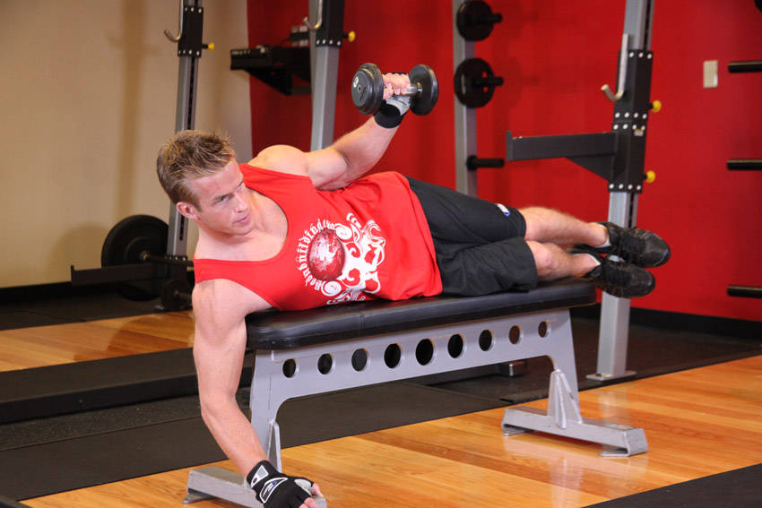

- Lie sideways on a flat bench with one arm holding a dumbbell and the other hand on top of the bench folded so that you can rest your head on it.
- Bend the elbows of the arm holding the dumbbell so that it creates a 90-degree angle between the upper arm and the forearm. Tip: Keep the arm parallel to your torso.
- Now bend the elbow while keeping the upper arm stationary. In this manner, the forearm will be parallel to the floor and perpendicular to your torso (Tip: So the forearm will be directly in front of you). The upper arm will be stationary by your torso and should be parallel to the floor (aligned with your torso at all times). This will be your starting position.
- As you breathe out, externally rotate your forearm so that the dumbbell is lifted up in a semicircle motion as you maintain the 90 degree angle bend between the upper arms and the forearm. You will continue this external rotation until the forearm is perpendicular to the floor and the torso pointing towards the ceiling. At this point you will hold the contraction for a second.
- As you breathe in, slowly go back to the starting position.
- Repeat for the recommended amount of repetitions and then switch to the other arm.